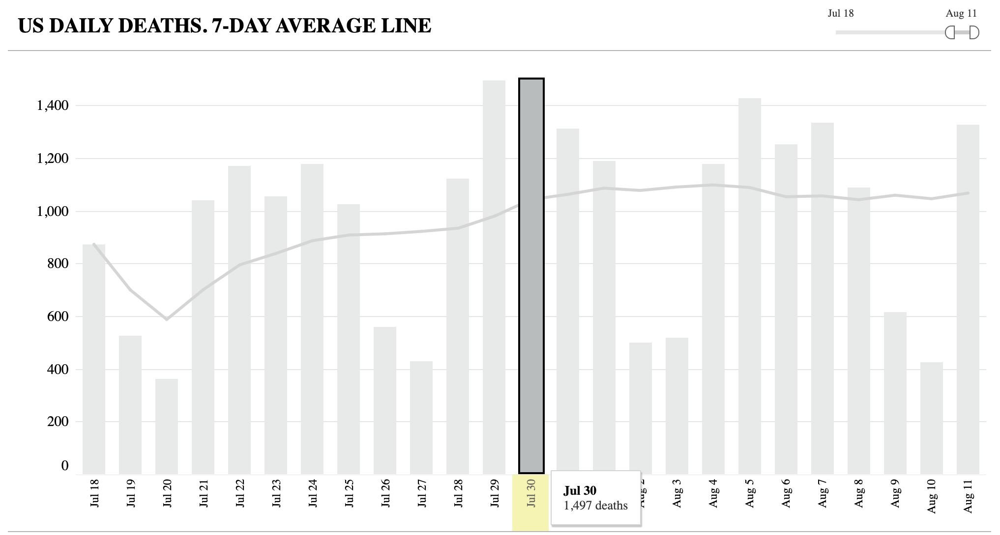

Number of new deaths on July 30th is incorrect in bar chart
Issue number 750
therealthaibinh opened this issue on August 11, 2020 at 10:02 pm
Labels Data quality stale
State or US: US
Describe the problem The number of new deaths in the bar chart is reported as 1,497. (https://covidtracking.com/data/charts/us-daily-deaths) However, using the data at https://covidtracking.com/data/us-daily, the number should only be 1,259: July 31: 145425 - 144114 = 1,311 July 30: 144114 - 142855 = 1,259 July 29: 142855 - 141363 = 1,492

This also subsequently affects the 7-day rolling average around that date.
Comments
This issue has been automatically marked as stale because it has not had recent activity. It will be closed if no further activity occurs. Thank you for your contributions!
This issue has been closed because it was stale for 15 days, and there was no further activity on it for 10 days. You can feel free to re-open it if the issue is important, and label it as “not stale.”
This issue has been automatically marked as stale because it has not had recent activity. It will be closed if no further activity occurs. Thank you for your contributions!